knitr::include_graphics("images/1.2-EnsembleMethods_insertimage_1.png")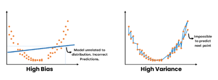
Introduction to Ensembles
Bagging and the Bootstrap
Random Forests
Boosting and its variants
Models that perform only slightly better than random guessing are called weak learners [@Bishop2007].
Weak learners low predictive accuracy may be due, to the predictor having high bias or high variance.
knitr::include_graphics("images/1.2-EnsembleMethods_insertimage_1.png")
In many situations trees may be a good option (e.g. for simplicity and interpretability)
But there are issues that, if solved, may improve performance.
It is to be noted, too, that these problems are not unique to trees.
knitr::include_graphics("images/1.2-Ensemble_Methods-Slides_insertimage_1.png")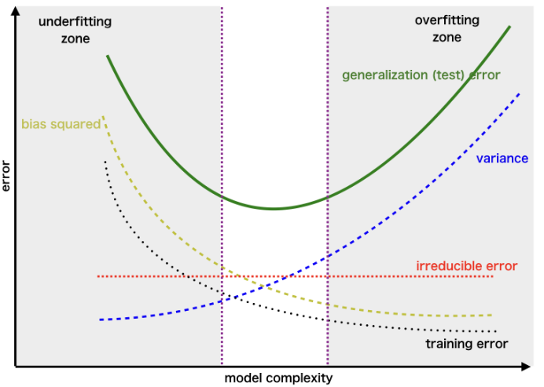
How can a model be made less variable or less biased without this increasing its bias or variance?
There are distinct appraches to deal with this problem
Ensemble learning takes the approach popularly known as “the wisdom of crowds”.
Predictors, also called, ensembles are built by fitting repeated (weak learners) models on the same data and combining them to form a single result.
Ensemble learners tend to improve the results obtained with the weak learners they are made of.
If we rely on how they deal with the bias-variance trade-off we can consider distinct groups of ensemble methods:
Bagging
Boosting
Hybrid learners
One type of ensembles is made by constructing multiple trees using different types of subsets.
These ensembles reduce variance compared to individual decision trees.
Boosting or Stacking combine distinct predictors to yield a model with an increasingly smaller error, and so reduce the bias.
They differ on if do the combination
sequentially (1) or
using a meta-model (2) .
Hybrid techniques combine approaches in order to deal with both variance and bias.
The approach should be clear from their name:
Gradient Boosted Trees with Bagging
Stacked bagging
Decision trees suffer from high variance when compared with other methods such as linear regression, especially when \(n/p\) is moderately large.
Given that this is intrinsic to trees, @Breiman1996 sugested to build multiple trees derived from the same dataset and, somehow, average them.
Bagging relies, informally, on the idea that:
That is, relying on the sample mean instead of on simple observations, decreases variance by a factor of \(n\).
BTW this idea is still (approximately) valid for more general statistics where the CLT applies.
Two questions arise here:
For regression (trees) the bagged estimate is the average prediction at \(x\) from these \(B\) trees. \[ {\small \hat f_{bag}(x)=\frac 1B \sum_{b=1}^B \hat f^{*b}(x) } \]
For classification (trees) the bagged classifier selects the class with the most “votes” from the \(B\) trees:
\[ {\small \hat G_{bag}(x) = \arg \max_k \hat f_{bag}(x). } \]
Every time a bootstrap sample is drawn with replacement, some observations are not selected.
For a given tree, these omitted observations are called out-of-bag (OOB) observations.
On average, each bootstrap sample leaves out about one third of the observations: \(\left(1-\frac{1}{n}\right)^n \approx e^{-1} \approx 0.368\)
knitr::include_graphics("images/oobErrorEstimation.jpg")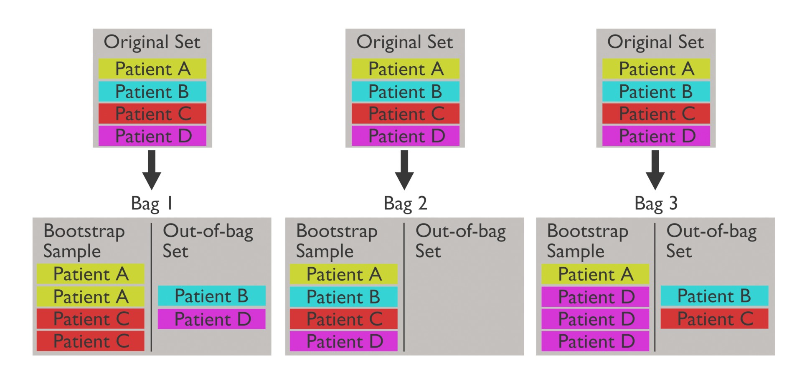
Since each out-of-bag set is not used to train the model, it can be used to evaluate performance.
The key idea is that OOB status is defined for each observation and each tree.
OOB prediction for observation \(i\) is obtained as:
OOB error is an internal estimate of the test error.
knitr::include_graphics("images/oobErrorEstimation.png")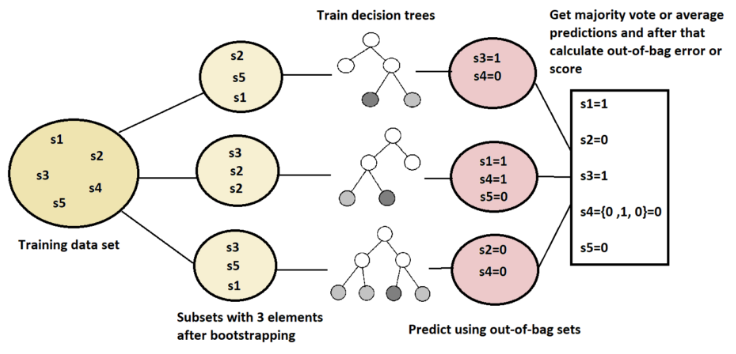
Source: https://www.baeldung.com/cs/random-forests-out-of-bag-error
We use the AmesHousing dataset on house prices in Ames, IA, to predict the “Sales price” of houses.
We use randomForest package setting mtry to total number of features.
# Prepare "clean" dataset from raw data
ames <- AmesHousing::make_ames()
# Scale response variable to improve readability
ames$Sale_Price <- ames$Sale_Price/1000
# Split in test/training
set.seed(123)
train <- sample(1:nrow(ames), nrow(ames)/2)
# split <- rsample::initial_split(ames, prop = 0.7,
# strata = "Sale_Price")
ames_train <- ames[train,]
ames_test <- ames[-train,]library(randomForest)randomForest 4.7-1.2Type rfNews() to see new features/changes/bug fixes.set.seed(12543)
bag.Ames <- randomForest(Sale_Price ~ .,
data = ames_train,
mtry = ncol(ames_train)-1,
ntree = 100,
importance = TRUE)print(bag.Ames )
Call:
randomForest(formula = Sale_Price ~ ., data = ames_train, mtry = ncol(ames_train) - 1, ntree = 100, importance = TRUE)
Type of random forest: regression
Number of trees: 100
No. of variables tried at each split: 80
Mean of squared residuals: 875.2949
% Var explained: 87.28The reported MSE is the OOB estimate of prediction error
tail(bag.Ames$mse,1)[1] 875.2949Although OOB error provides an internal estimate of prediction error, we can also evaluate performance using an independent test set.
yhat.bag <- predict(bag.Ames, newdata = ames_test)
MSE= mean((yhat.bag -ames_test$Sale_Price)^2)
print(MSE)Here, predictions are made on completely unseen observations.
This is a standard test error estimate, not an OOB estimate.
To measure feature importance, the reduction in the loss function (e.g., SSE) attributed to each variable at each split is tabulated.
The total reduction in the loss function across all splits by a variable are summed up and used as the total feature importance.
require(dplyr)
VIP <- importance(bag.Ames)
VIP <- VIP[order(VIP[,1], decreasing = TRUE),]
head(VIP, n=10)knitr::include_graphics("images/amesVIP2.png")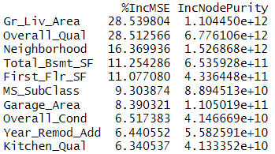
While growing a decision tree, during the bagging process,
Random forests perform split-variable randomization:
knitr::include_graphics("images/RandomForests2.png")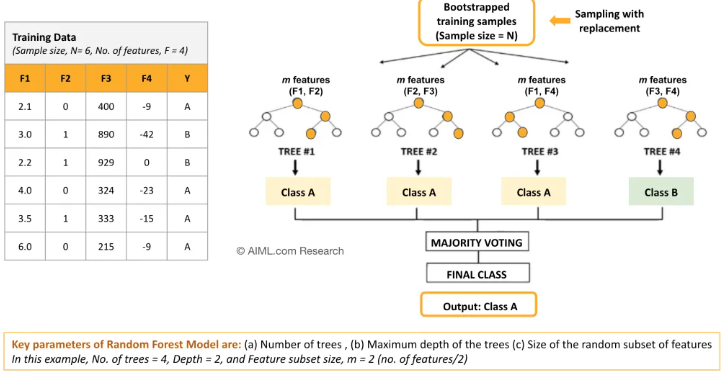
Source: AIML.com research
knitr::include_graphics("images/RandomForestsAlgorithm1.png")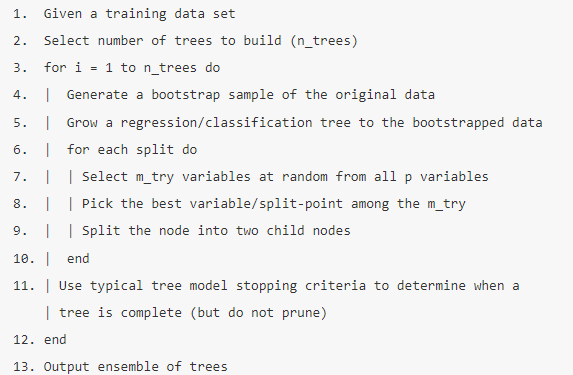
knitr::include_graphics("images/RandomForestsAlgorithm.png")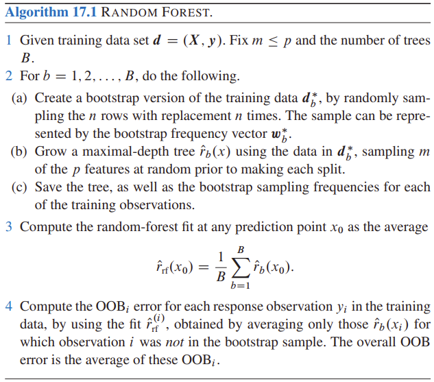
# number of features
n_features <- length(setdiff(names(ames_train), "Sale_Price"))
# train a default random forest model
ames_rf1 <- ranger(
Sale_Price ~ .,
data = ames_train,
mtry = floor(n_features / 3),
respect.unordered.factors = "order",
seed = 123
)
# get OOB RMSE
(default_rmse <- sqrt(ames_rf1$prediction.error))
## [1] 24859.27There are several parameters that, appropriately tuned, can improve RF performance.
1 & 2 usually have largest impact on predictive accuracy.
knitr::include_graphics("images/RandomForestsHyperparameters1.png")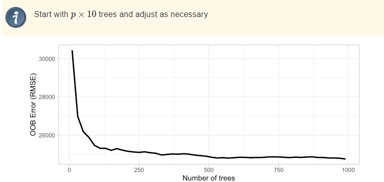
knitr::include_graphics("images/RandomForestsHyperparameters2.png")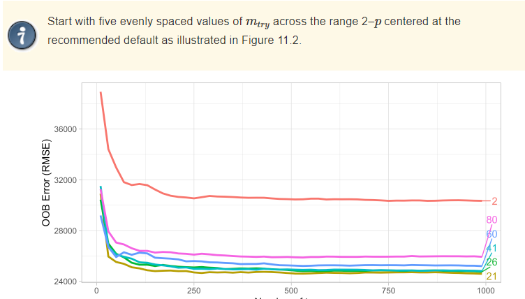
knitr::include_graphics("images/RandomForestsHyperparameters3.png")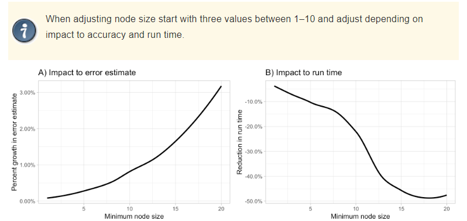
knitr::include_graphics("images/RandomForestsHyperparameters4.png")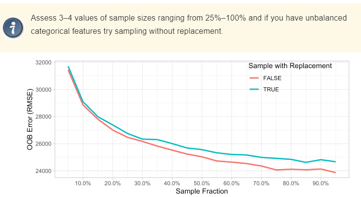
Grid Search: Systematically searches through (all possible combinations) a predefined grid of hyperparameter values to find the combination that maximizes performance.
Random Search: Randomly samples hyperparameter values from predefined distributions. Faster than Grid Search, but less prone to find optimum.
Model-Based Optimization leverages probabilistic models, often Gaussian processes, to model the objective function and iteratively guide the search for optimal hyperparameters.
The idea of improving weak learners by aggregation has moved historically along two distinct lines:
knitr::include_graphics("images/baggingVsboosting1.png")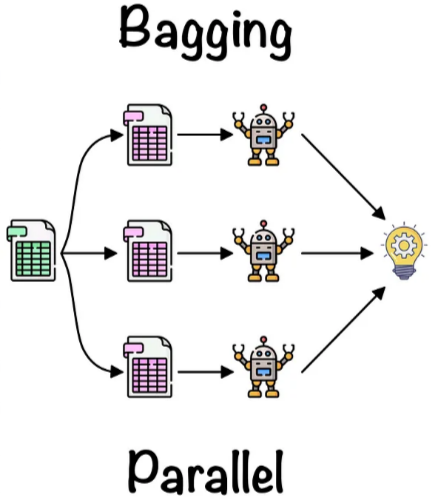
knitr::include_graphics("images/baggingVsboosting2.png")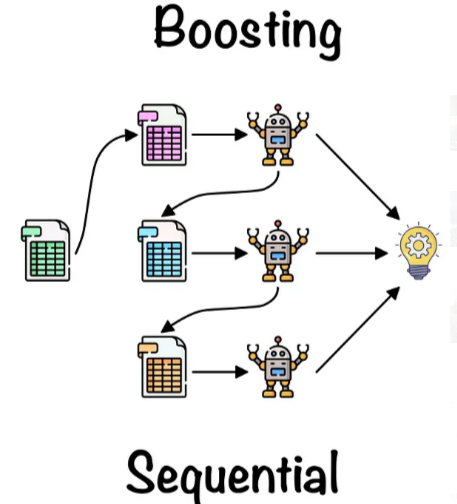
Idea: create a model that is better than any of its individual components by combining their strengths and compensating for their weaknesses.
Multiple weak models are trained sequentially.
Each new model is trained to improve the errors made by the previous model.
The final model is a weighted combination of all the models where the weights are determined by the accuracy of each model.
The boosting technique was proposed by Robert Schapire [@Schapire89] and Yoav Freund in the 1990s.
They introduced AdaBoost, the first widely-used Boosting algorithm.
Other Boosting algorithms have become popular: Gradient Boosting, XGBoost, and LightGBM.
AdaBoost (Adaptive Boosting) is a direct implementation of the “boosting” idea.
It trains models sequentially, new models focusing on correcting the errors of the previous ones.
Final Decision is made by combining models, giving more influence to the most reliable ones through
A weighted majority vote (classification) or
Weighted sum (regression).
Adaboost proceeds iteratively by, at each iteration:
Fit the weak learner using initial weights.
Predict and identify misclassified observations.
Update observation weights:
decrease for correctly classified
increase for misclassified.
Assign a learner weight to the weak learner based on its accuracy.
The final prediction is a weighted combination of all weak learners.
knitr::include_graphics("images/Adaboost.jpeg")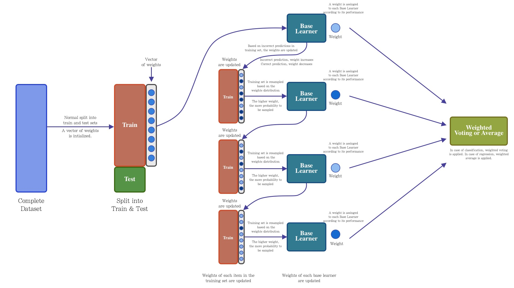
Initialize sample weights: \(w_i = 1/N\), where \(N\) = # of training samples.
For each iteration \(t=1,2,\dots,T\) do:
Train weak classifier \(h_t(x)\) on training set weighted by \(w_i\).
Compute the weighted error rate: \[{\small \left. \epsilon_t = \sum_{i=1}^N w_i I(y_i \neq h_t(x_i)) \right/ \left. \sum_{i=1}^N w_i\right. }\]
Compute the classifier weight: \(\alpha_t = \frac{1}{2}\log\frac{1-\epsilon_t}{\epsilon_t}\).
Update the sample weights: \(w_i \leftarrow w_i^{-\alpha_t I(y_i \neq h_t(x_i))}\).
Normalize the sample weights: \(w_i \leftarrow \frac{w_i}{\sum_{j=1}^N w_j}\).
Output the final classifier: \(H(x) = \text{sign}\left(\sum_{t=1}^T \alpha_t h_t(x)\right)\).
knitr::include_graphics("images/Adaboost4FaceRecognition.png")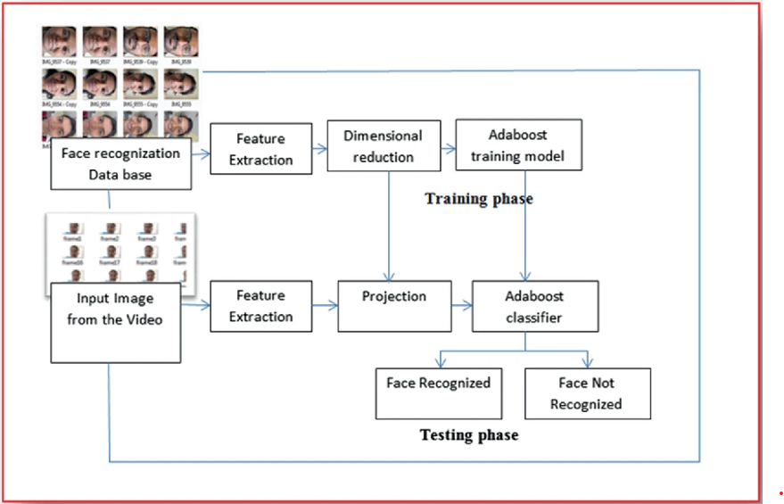
source: Evaluating the AdaBoost Algorithm for Biometric-Based Face Recognition
Adaboost was a breakthrough algorithm that significantly improved the accuracy of ML models.
However, Adaboost has its limitations.
It does not handle continuous variables very well.
Can be sensitive to noisy data and outliers,
May not perform well with complex datasets.
Its performance can reach a “plateau”: it will no longer improve after a certain number of iterations.
In order to deal with some of these drawbacks different variants of boosting have been proposed.
Developed to overcome the limitations of Adaboost.
Takes a different approach that can be linked with Optimization by Gradient Descent.
Several advantages over Adaboost
Can handle continuous variables much better,
It is more robust to noisy data and outliers.
Can handle complex datasets and
Can continue to improve its accuracy even after Adaboost’s performance has “plateaued”.
Train a first weak learner \(f_1\), which predicts the response variable \(y\), and calculate the residuals \(y - f_1(x)\).
Next, train a new model \(f_2\), to predict the residuals of the previous model, that is, to correct the errors made by model \(f_1\).
\(f_1(x) \approx y\)
\(f_2(x) \approx y - f_1(x)\)
Iterate calculating residuals of the two models together \(y - f_1(x) - f_2(x)\) and train a third model \(f_3\) to correct them.
Repeat the process \(M\) times, so that each new model minimizes the residuals (errors) of the previous one.
Since the goal of Gradient Boosting is to minimize the residuals iteration by iteration, it is susceptible to overfitting.
One way to avoid this problem is by using a regularization value, also known as the learning rate (\(\lambda\)), which limits the influence of each model on the ensemble.
As a result of this regularization, more models are needed to form the ensemble, but better results are achieved.
\(f_1(x) \approx y\)
\(f_2(x) \approx y - \lambda f_1(x)\)
\(f_3(x) \approx y - \lambda f_1(x) - \lambda f_2(x)\)
\(y \approx \lambda f_1(x) + \lambda f_2(x) + \lambda f_3(x) + \ldots + \lambda f_m(x)\)
knitr::include_graphics("images/gradientboosting.jpeg")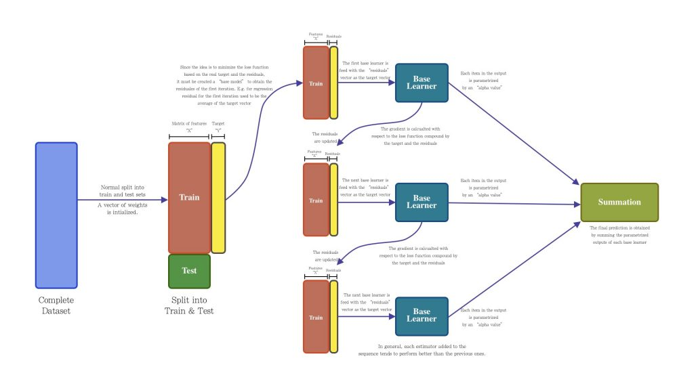
Gradient Boosting can be seen as an extension of Gradient Descent, a popular optimization algorithm used to find the minimum of a function.
In Gradient Descent, the weights of the model are updated in the opposite direction of the gradient of the cost function.
In Gradient Boosting, the new model is trained on the negative gradient of the loss function, which is equivalent to minimizing the loss function in the direction of steepest descent.
Multiple extensions from Gradient Boosting.
XGBoost
LightGBM
Fraud Detection
Image and Speech Recognition
Anomaly Detection
Medical Diagnosis
Amazon’s recommendation engine
Models that predict protein structures from amino acid sequences
Pattern identification in fMRI brain scans.
Boosting, like other Ensemble methods, improves the accuracy of weak learners and achieve better predictive performance than individual models.
Boosting also reduces overfitting by improving the generalization ability of models.
Available in many flavors,
Can be parallelized
Strong experience in Real world applications and industry.
Can be computationally expensive, especially when dealing with large datasets and complex models.
Can be sensitive to noisy data and outliers,
May not work well with certain types of data distributions.
Not so good as “out-of-the-box”: Requires careful tuning of hyperparameters to achieve optimal performance, which can be time-consuming and challenging.
Many R packages implement the many variations of boosting:
Inpython we usually rely on scikit-learn libraries although there are many alternative implementations
These slides have been conserved as an appendix because they were originally added to this chapter, when a section on resampling was not included in previous chapters.
They can be used as an introduction to the bootstrap, similar to the scond part of the Chapter on Cross-validation and resampling.
The bootstrap has been applied to almost any problem in Statistics.
We illustrate it with the simplest case: estimating the standard error of an estimator.
x<- c(2,5,0,11,-1)
Fn <- ecdf(x)
knots(Fn)[1] -1 0 2 5 11cat("Fn(3) = ", Fn(3))Fn(3) = 0.6cat("Fn(-2) = ", Fn(-2))Fn(-2) = 0plot(Fn)
\(F_n (x)\) is a cumulative distribution function.
\(F_n()\) is an important DF because it comes to be the best approximation that one can find for the theoretical (population) distribution function, that is: \[ F_n(x) \longrightarrow F(x), \text { uniformly in } x \text{ as } n \rightarrow \infty. \]
This is stated in the Glivenko-Cantelli theorem also know as the Central Theorem of Statistics.
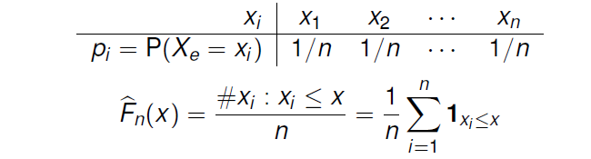
\(F_n\) is the distribution (function) of \(X_e\).
From here, we notice that generating samples from \(F_n\) can be done by randomly taking values from \(\mathbf{X}\) with probability \(1/n\)
Assume we want to estimate some parameter \(\theta\), that can be expressed as \(\theta (F)\), where \(F\) is the distribution function of each \(X_i\) in \((X_1,X_2,...,X_n)\).
For example, \(\theta = E_F(X)=\theta (F)\).
A natural way to estimate \(\theta(F)\) may be to rely on plug-in estimators, where \(F\) in \(\hat \theta (F)\) is substituted by some approximation (estimate) to \(F\).
\[\begin{eqnarray*} \theta_1 &=& E_F(X)=\theta (F) \\ \hat{\theta_1}&=&\overline{X}=\int XdF_n(x)=\frac 1n\sum_{i=1}^nx_i=\theta (F_n) \\ \theta_2 &=& Med(X)=\{m:P_F(X\leq m)=1/2\}= \theta (F), \\ \hat{\theta_2}&=&\widehat{Med}(X)=\{m:\frac{\#x_i\leq m}n=1/2\}=\theta (F_n) \end{eqnarray*}\]
A key point, when computing an estimator \(\hat \theta\) of a parameter \(\theta\), is how precise is \(\hat \theta\) as an estimator of \(\theta\)?
With the sample mean, \(\overline{X}\), the standard error estimation is immediate because the variance of the estimator is known: \(\sigma_{\overline{X}}=\frac{\sigma (X)}{\sqrt{n}}\)
So, a natural estimator of the standard error of \(\overline{X}\) is: \(\hat\sigma_{\overline{X}}=\frac{\hat{\sigma}(X)}{\sqrt{n}}\)
\[ \sigma _{\overline{X}}=\frac{\sigma (X)}{\sqrt{n}}=\frac{\sqrt{\int [x-\int x\,dF(x)]^2 dF(x)}}{\sqrt{n}}=\sigma _{\overline{X}}(F) \]
then, the standard error estimator is the same functional applied on \(F_n\), that is:
\[ \hat{\sigma}_{\overline{X}}=\frac{\hat{\sigma}(X)}{\sqrt{n}}=\frac{\sqrt{1/n\sum_{i=1}^n(x_i-\overline{x})^2}}{\sqrt{n}}=\sigma _{\overline{X}}(F_n). \]
The bootstrap method makes it possible to do the desired approximation: \[\hat{\sigma}_{\hat\theta} \simeq \sigma _{\hat\theta}(F_n)\] without having to to know the form of \(\sigma_{\hat\theta}(F)\).
To do this,the bootstrap estimates, or directly approaches \(\sigma_{\hat{\theta}}(F_n)\) over the sample.
\[\begin{eqnarray*} &&\mbox{Instead of: } \\ && \quad F\stackrel{s.r.s}{\longrightarrow }{\bf X} = (X_1,X_2,\dots, X_n) \, \quad (\hat \sigma_{\hat\theta} =\underbrace{\sigma_{\theta(F_n)}_{unknown}) \\ && \mbox{It is done: } \\ && \quad F_n\stackrel{s.r.s}{\longrightarrow }\quad {\bf X^{*}}=(X_1^{*},X_2^{*}, \dots ,X_n^{*}) \\ && \quad (\hat \sigma_{\hat\theta}= \hat \sigma_{\hat \theta}^* \simeq \sigma_{\hat \theta}^*=\sigma_{\hat \theta}(F_n)). \end{eqnarray*}\]
Resampling consists of extracting samples of size \(n\) of \(F_n\): \({\bf X_b^{*}}\) is a random sample of size \(n\) obtained with replacement from the original sample \({\bf X}\).
Samples \({\bf X^*_1, X^*_2, ..., X^*_B }\), obtained through this procedure are called bootstrap samples or re-samples.
On each resample the statistic of interest \(\hat \theta\) can be computed yielding a bootstrap estimate \(\hat \theta^*_b= s(\mathbf{x^*_b})\).
The collection of bootstrap estimates obtained form the resampled samples can be used to estimate distinct characteristics of \(\hat \theta\) such as its standard error, its bias, etc.
knitr::include_graphics("images/1.2-Ensemble_Methods-Slides_insertimage_2.png")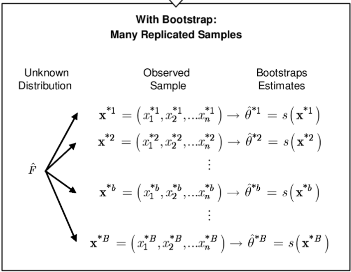
\[\begin{eqnarray*} \mathcal {L}(\hat \theta)&\simeq& P_F(\hat\theta \leq t): \mbox{Sampling distribution of } \hat \theta,\\ \mathcal {L}(\hat \theta^*)&\simeq& P_{F_n}(\hat\theta^* \leq t): \mbox{Bootstrap distribution of } \hat \theta, \end{eqnarray*}\]
This distribution is usually not known.
However the sampling process and the calculation of the statistics can be approximated using a Monte Carlo Algorithm.
\[ \hat{\sigma}_B(\hat\theta)\left (\simeq \sigma_B(\hat\theta)=\sigma_{\hat\theta}(F_n)\right )\simeq\hat \sigma_{\hat\theta}(F_n). \]
From real world to bootstrap world:
knitr::include_graphics("images/fromRealWorld2BootstrapWorld.png")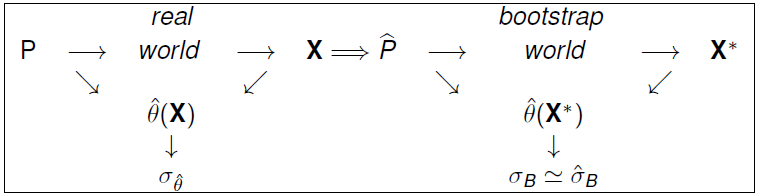
Aquesta imatge no mostra el càlcul del error estandar. Canviar-la per una que si ho faci